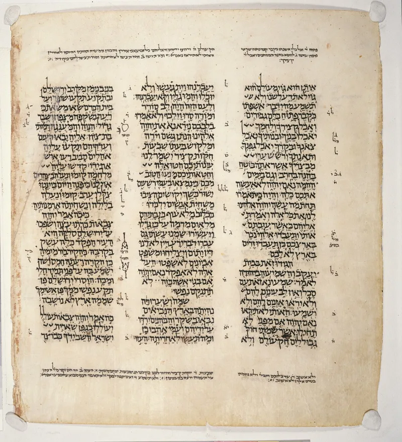

No good counter-argument has been published by the counter-missionary teachers — the Jewish speakers and writers whose work is answering Christians.
That Christianity invented a "new covenant" to replace the one God made with Israel. It gets said as though a new covenant were obviously a Christian idea, bolted on later to justify a new religion.
It is Jeremiah's. Jeremiah was a prophet in Jerusalem around 600 BC.
He was writing to Jewish people. His book is part of the Hebrew Bible — what Christians call the Old Testament.
So the phrase is not an import. It is already there.
Jeremiah 31:31 — "Behold, the days come, saith the LORD, that I will make a new covenant with the house of Israel, and with the house of Judah." He names the two parties out loud: Israel and Judah. Not a replacement people.
The same people God had made the first covenant with.
Jeremiah 31:33 says God will "put my law in their inward parts, and write it in their hearts." That means obedience from the inside, not rules imposed from outside. Jeremiah 31:34 says everyone will know God directly, "from the least of them unto the greatest." No middlemen.
Then the last line, and the biggest one: God will "remember their sin no more." Not sin covered over. Sin forgotten.
Strong for the Christian side. There is nothing here for a Jewish friend to dispute, because the words are in their own Bible and they name their own people.
The disagreement starts later, over who brought the covenant — not over whether one was promised.
It stops an argument before it starts. Say your friend claims Christians invented a second covenant.
You are not defending a Christian idea. You are asking about a promise their own prophet made.
He made it in their Scriptures. He made it to their people.
The question is no longer whether a new covenant was coming. It is only who brought it.
"Who is Jeremiah's new covenant made with? Read me Jeremiah 31:31."

Read on: the next verses promise Israel will never stop being a nation.
Read the content of the promise, they say. The new covenant is the same Torah. God says 'I will put my Torah within them', written so deep inside people that it can no longer be broken. Nothing here ends the commandments, replaces Israel, or names a mediator who dies.
They also note that chadashah can mean renewed, the way the moon is renewed each month. And the timeframe is the messianic age, when 'they shall all know me.' That is plainly not the present world.
Then comes their strongest move. The very next verses, Jeremiah 31:35-37, stake God's own reliability on Israel remaining a nation forever. That is the most powerful anti-replacement passage in the Bible, and it sits inside the passage Christians quote. If the church reads verses 31 to 34 literally, it must read 35 to 37 the same way.
Strong for you, but the same passage forbids saying God is done with Israel.
Graded Strong — no Jewish answer deals with the narrow claim. The Hebrew Bible itself expects a new covenant, grounded in final forgiveness, promised to Israel. Christians did not invent the category. They claim it.
But notice what the reply actually defeats. It defeats the overreach: that the Torah was abolished, or that Israel was replaced. Anyone using this entry has to give up that overreach too, because Jeremiah 31:35-37 sits in the same passage and says the opposite.
So use it in both directions. It answers the charge that Christians made up a second covenant, and it rebukes any Christian who thinks God is finished with Israel.